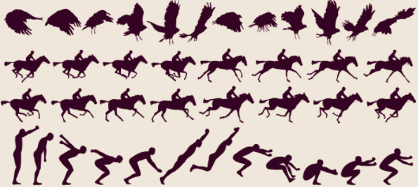
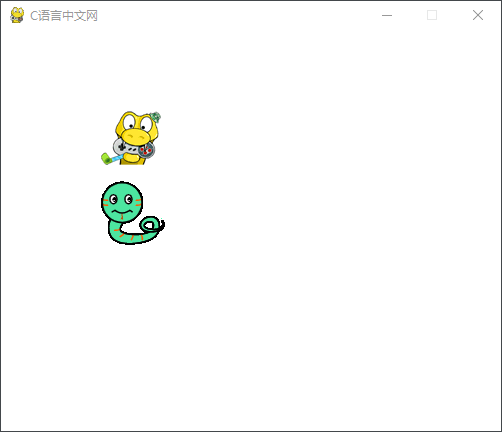
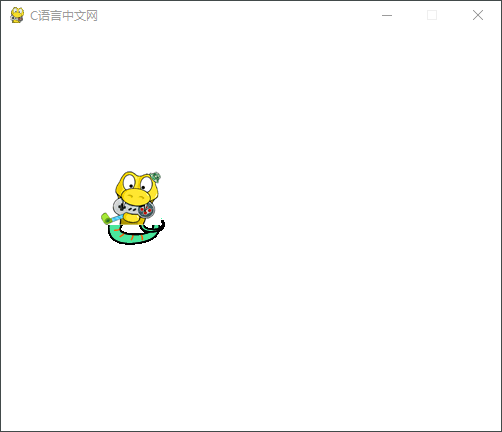

Pygame精灵和碰撞检测
在开始学习相关知识点之前，我们有必要先学习精灵和碰撞检测的含义。
精灵（英文译为 Sprite），其实在一个游戏程序中，精灵本质指的是一张张小尺寸的图片，比如游戏中的各种道具、人物、场景装饰等，它们都可以看做成一张张小的“精灵”图。除此之外，人物的移动也可以看做是一系列小精灵图构成的序列（按帧组成的序列），如下图所示：
如果将逐帧分解后的动作，按照一定的频率播放，那么就形成了动画精灵，您将会看到雄鹰展翅高飞、人在策马奔腾、运动员奋力跳远。
精灵有个特点就是允许精灵之间进行交互，也称之为碰撞，而碰撞检测，指的就是检测两个精灵之间是否发生了碰撞。比如在贪吃蛇游戏中蛇的头部是否与食物发生了碰撞，或者飞机大战游戏中子弹是否击中了外星人等等。当检测到碰撞发生后，接下来会触发某些事件，比如子弹击中外星人，外星人就会消失，玩家的得分也会随之增加，并且在游戏屏幕上又会出现一个外星人。
Pygame 专门提供了一个处理精灵的模块，也就是 sprite（pygame.sprite）模块。通常情况下，我们使用该模块的基类 Sprite 来创建一个子类，从而达到处理精灵的目的，该子类提供了操作精灵的常用属性和方法，如下所示：
注意，当游戏中有大量的精灵时，操作它们将变得复杂，此时通过构建精灵容器（group 类）也就是精灵组来统一管理这些精灵。构建方法如下：
下面看一组简单的示例，代码如下所示：
接下来，我们将 snake2 的
除上述内容外，Pygame 还提供许多其他模块，比如 mixer（声音）、movie（播放视频）、music（播放音频）、sndarray（操作声音数据）等模块，由于这些模块使用起来较为简单，因此这里不再逐一介绍，感兴趣的朋友可以阅读 Pygame 官方文档 —>点击前往！
精灵（英文译为 Sprite），其实在一个游戏程序中，精灵本质指的是一张张小尺寸的图片，比如游戏中的各种道具、人物、场景装饰等，它们都可以看做成一张张小的“精灵”图。除此之外，人物的移动也可以看做是一系列小精灵图构成的序列（按帧组成的序列），如下图所示：

图1：动作逐帧分解图
图1：动作逐帧分解图
如果将逐帧分解后的动作，按照一定的频率播放，那么就形成了动画精灵，您将会看到雄鹰展翅高飞、人在策马奔腾、运动员奋力跳远。
精灵有个特点就是允许精灵之间进行交互，也称之为碰撞，而碰撞检测，指的就是检测两个精灵之间是否发生了碰撞。比如在贪吃蛇游戏中蛇的头部是否与食物发生了碰撞，或者飞机大战游戏中子弹是否击中了外星人等等。当检测到碰撞发生后，接下来会触发某些事件，比如子弹击中外星人，外星人就会消失，玩家的得分也会随之增加，并且在游戏屏幕上又会出现一个外星人。
Pygame 专门提供了一个处理精灵的模块，也就是 sprite（pygame.sprite）模块。通常情况下，我们使用该模块的基类 Sprite 来创建一个子类，从而达到处理精灵的目的，该子类提供了操作精灵的常用属性和方法，如下所示：
| 属性&方法 | 说明 |
|---|---|
| self.image | 加载要显示的精灵图片，控制图片大小和填充色 |
| self.rect | 精灵图片显示在哪个位置 |
| Sprite.update() | 刷新精灵图，使其相应效果生效 |
| Sprite.add() | 添加精灵图到精灵组中（groups） |
| Sprite.remove() | 从精灵组中删除选中的精灵图 |
| Sprite.kill() | 删除精灵组中全部的精灵 |
| Sprite.alive() | 判断某个精灵是否属于精灵组 |
注意，当游戏中有大量的精灵时，操作它们将变得复杂，此时通过构建精灵容器（group 类）也就是精灵组来统一管理这些精灵。构建方法如下：
# 创建精灵组 group = pygame.sprite.Group() # 向组内添加一个精灵 group.add(sprite_one)于此同时
pygame.sprite模块也提供了多种检测精灵是否碰撞的方法，如下所示：| 方法 | 说明 |
|---|---|
| pygame.sprite.collide_rect() | 两个精灵之间的矩形检测，即矩形区域是否有交汇，返回一个布尔值。 |
| pygame.sprite.collide_circle() | 两个精灵之间的圆形检测，即圆形区域是否有交汇，返回一个布尔值。 |
| pygame.sprite.collide_mask() | 两个精灵之间的像素蒙版检测，更为精准的一种检测方式。 |
| pygame.sprite.spritecollide() | 精灵和精灵组之间的矩形碰撞检测，一个组内的所有精灵会逐一地对另外一个单个精灵进行碰撞检测，返回值是一个列表，包含了发生碰撞的所有精灵。 |
| pygame.sprite.spritecollideany() | 精灵和精灵组之间的矩形碰撞检测，上述函数的变体，当发生碰撞时，返回组内的一个精灵，无碰撞发生时，返回 None。 |
| pygame.sprite.groupcollide() | 检测在两个组之间发生碰撞的所有精灵，它返回值是一个字典，将第一组中发生碰撞的精灵作为键，第二个组中发生碰撞的精灵作为值。 |
下面看一组简单的示例，代码如下所示：
import pygame
class Snake(pygame.sprite.Sprite):
#定义构造函数
def __init__(self,filename,location):
# 调父类来初始化子类
pygame.sprite.Sprite.__init__(self)
# 加载图片
self.image = pygame.image.load(filename)
# 获取图片rect区域
self.rect = self.image.get_rect()
# 设置位置
self.rect.topleft=location
# 初始化pygame
pygame.init()
screen = pygame.display.set_mode((500,400))
pygame.display.set_caption('C语言中文网')
# 填充为白色屏幕
screen.fill((255,255,255))
filename ="C:/Users/Administrator/Desktop/snake.png"
location =(100,150)
snake1 = Snake(filename,location)
# 碰撞检测,必须有两个精灵，因此再创建一个精灵，并使用location来控制第二个精灵的位置
location_2 = (100,80)
snake2 = Snake('C:/Users/Administrator/Desktop/logo.png',location_2)
# 调用 collide_rect()进行矩形区域检测，返回一个布尔值，碰撞返回True，否则返回False
crash_result = pygame.sprite.collide_rect(snake1,snake2)
if crash_result:
print("精灵碰撞了!")
pass
else:
print('精灵没碰撞')
while True:
for event in pygame.event.get():
if event.type == pygame.QUIT:
pygame.quit()
exit()
# 绘制精灵到屏幕上
screen.blit(snake1.image,snake1.rect)
screen.blit(snake2.image,snake2.rect)
# 刷新显示屏幕
pygame.display.update()
当精灵没有发生碰撞时，程序的运行结果如下：

图2：运行结果
图2：运行结果
接下来，我们将 snake2 的
location_2参数变为 (100,140)，然后再次运行程序，这时两个精灵就会发生碰撞，运行结果如下：

图3：运行结果
图3：运行结果
除上述内容外，Pygame 还提供许多其他模块，比如 mixer（声音）、movie（播放视频）、music（播放音频）、sndarray（操作声音数据）等模块，由于这些模块使用起来较为简单，因此这里不再逐一介绍，感兴趣的朋友可以阅读 Pygame 官方文档 —>点击前往！
关注公众号「站长严长生」，在手机上阅读所有教程，随时随地都能学习。内含一款搜索神器，免费下载全网书籍和视频。

微信扫码关注公众号